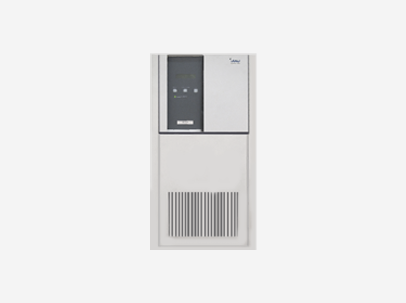

망막/황반변성
에스안과
시력교정
노안/백내장
망막/황반변성
안구건조증
녹내장
소아안과
안성형
예약/상담
1Day 망막 정밀 검사
1Day 망막 정밀 검사
황반변성
당뇨망막병증
비문증(날파리증)
망막혈관폐쇄
그 외 망막질환
1DAY 망막 정밀 검사
실명을 유발하는 망막/황반질환에
대한 정기적인 검진이 중요합니다.
실명 부르는
망막질환 환자 급증
우리의 눈을 위협하는 망막질환, 정확한 검사를 통해 확실한 결과를 얻을 수 있습니다.
망막 정밀검사를 통해 망막 이상을 조기발견하고 원인 질환에 따라 가장 효과적인 치료법을 적용합니다.
정기적인
망막검사 대상
CHECK01
당뇨병
겪고 있는 분
CHECK02
고혈압
겪고 있는 분
CHECK03
시야에 변화를
겪고 있는 분
CHECK04
50대
이상
중년층
노년층
CHECK05
시력 저하
및
시력장애
CHECK06
고도근시
환자
1DAY
망막 정밀 검사
에스안과의
안전한 수술시스템

UPS 무정전 시스템
정전 등 천재지변의 상황이 발생해도
전원을 안전하게 공급할 수 있는
장치를 보유
365일 항온 학습
수술실은 가장 적합한 온도인 섭씨
20도와 최적 습도 40%를
항상 일정하게 유지
완벽한 멸균 시스템
수술실은 항상 완벽한
멸균관리를 진행하며
청결하게 관리
안전하고 효과적인 망막질환 치료, 에스안과에서 안심하고 치료하세요.